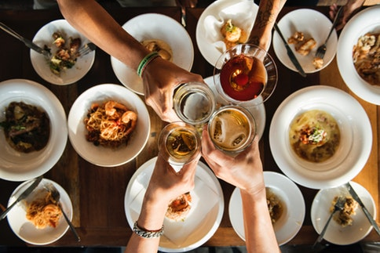

<!DOCTYPE html>
<html>
  <head>
    <!--
    New Perspectives on HTML5 and CSS3, 7th Edition
    Tutorial 1
    Review Assignment
    
    Starting Page of Mobile Panini
    Author: 
    Date:   

    Filename: mp_index.html
   -->
  </head>

  <body></body>
</html>

<!DOCTYPE html>
<html lang="en">
  <head>
    <meta charset="UTF-8" />
    <meta name="viewport" content="width=device-width, initial-scale=1.0" />
    <meta http-equiv="X-UA-Compatible" content="ie=edge" />
    <meta
      name="keywords"
      content="Australian, Italian, Mobile,European, Hot-Food"
    />
    <title>Mobile Panini</title>
    <link rel="stylesheet" href="mp_base.css" />
    <link rel="stylesheet" href="mp_layout.css" />
  </head>
  <body>
    <header>
      <a href="index.html"> </a>
      <nav>
        <ul>
          <li><a href="index.html" alt="Home"> Home </a></li>
          <li><a href="mp_menu_txt.html" alt="Menu"> Menu </a></li>
          <li><a href="mp_catering_txt.html" alt="Events"> Events </a></li>
          <li><a href="mp_catering_txt.html" alt="Catering"> Catering</a></li>
        </ul>
      </nav>
    </header>
    <article>
      <h1>Welcome</h1>
      
      Mobile Panini is the culmination of the dream of Antonio and Carmen
      Dolcini, who came to America looking to serve people the authentic recipes
      learned from their Sicilian family. Antonio began work as a child in his
      grandmother's deli where he learned the age-old secrets of Sicilian
      cooking. He refined his technique at the Culinary Institute of Milan. His
      younger brother, Carmen, with no less of a love for cooking and good food,
      also worked in the deli and became well-acquainted with the open-air fresh
      food markets of his home town. Carmen too, is a proud graduate of the
      Culinary Institute of Milan. Now you can enjoy what they have learned and
      mastered, right outside your door; but with no compromises in freshness or
      delicacy of preparation. We've partnered with Curbside Thai to bring you
      the finest cuisine on four wheels - from the East and the West! Phone:
      (61) 45-8558 E-mail: mobilepanini@example.com
    </article>
    <footer>
      Mobile Panini &#9832; 34 Humeway Sydney, Australia &nbsp; 2560 &#9832;
      61-4556645543
    </footer>
  </body>
</html>
